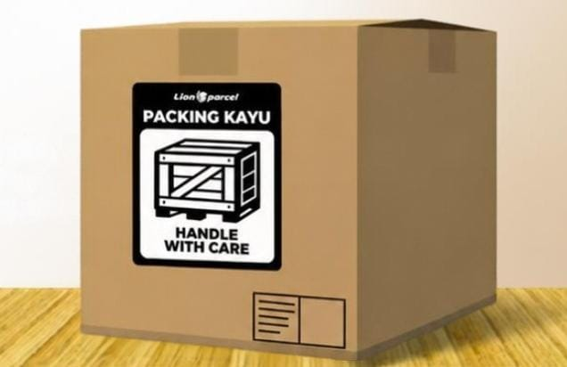

Cara Packing Kayu yang Benar agar Barang Aman Saat Dikirim

Mengirim barang berukuran besar, barang elektronik, peralatan rumah tangga, atau benda yang mudah pecah tentu membutuhkan perlindungan ekstra. Salah satu cara yang sering digunakan untuk menjaga keamanan barang selama perjalanan adalah menggunakan packing kayu.
Packing kayu merupakan metode pengemasan dengan menggunakan rangka atau peti berbahan kayu untuk membantu melindungi barang dari benturan, tekanan, dan risiko kerusakan selama proses pengiriman. Namun, pemasangannya tidak boleh sembarangan karena harus disesuaikan dengan ukuran, berat, dan karakteristik barang.
Kabar baiknya, Anda tidak harus repot membuat packing kayu sendiri di rumah. Lion Parcel melayani packing kayu untuk membantu pelanggan mempersiapkan kemasan barang yang membutuhkan perlindungan tambahan. Jadi, Anda bisa lebih praktis tanpa perlu membeli bahan kayu atau merakit peti sendiri.
Butuh Packing Kayu untuk Barang Kiriman?
Tidak perlu repot membuat peti kayu sendiri di rumah. Konsultasikan kebutuhan pengiriman dan layanan packing kayu melalui Lion Parcel Bandung POS101.
💬 Tanya Packing Kayu via WhatsApp1. Mengapa Barang Tertentu Membutuhkan Packing Kayu?
Tidak semua barang cukup dilindungi dengan kardus dan bubble wrap. Beberapa jenis barang memiliki risiko lebih tinggi mengalami kerusakan apabila terkena tekanan atau benturan selama perjalanan.
Contoh barang yang dapat dipertimbangkan menggunakan packing kayu antara lain:
- Barang elektronik: seperti televisi, monitor, dan perangkat elektronik tertentu.
- Barang pecah belah: seperti keramik, kaca, dan perlengkapan dekorasi.
- Peralatan rumah tangga: seperti mesin kecil dan perlengkapan dapur tertentu.
- Peralatan industri: seperti komponen mesin dan suku cadang tertentu.
- Barang bernilai tinggi: yang membutuhkan perlindungan fisik tambahan.
Penggunaan packing kayu tetap perlu disesuaikan dengan ketentuan ekspedisi, jenis barang, ukuran, berat, serta karakteristik pengiriman.
2. Cara Packing Kayu yang Benar
Jika Anda ingin mengetahui bagaimana proses packing kayu dilakukan, berikut beberapa tahapan yang perlu diperhatikan.
A. Periksa Kondisi Barang Terlebih Dahulu
Pastikan barang dalam kondisi baik sebelum dikemas. Periksa bagian yang mudah pecah, komponen yang menonjol, serta bagian yang berpotensi rusak akibat guncangan. Untuk barang elektronik, pastikan perangkat sudah dimatikan dan aksesori kecil diamankan secara terpisah.
B. Gunakan Pelindung Bagian Dalam
Sebelum dimasukkan ke dalam peti kayu, barang sebaiknya dilindungi menggunakan bahan tambahan seperti bubble wrap, busa, atau pelindung lain yang sesuai. Tujuannya agar barang tidak bersentuhan langsung dengan dinding kayu.
C. Sesuaikan Ukuran Peti Kayu
Ukuran peti harus disesuaikan dengan dimensi barang. Jangan sampai peti terlalu sempit sehingga menekan barang, tetapi juga jangan terlalu longgar karena barang bisa bergerak di dalam kemasan.
D. Pastikan Konstruksi Kayu Kuat
Rangka dan sambungan kayu harus dibuat dengan kokoh. Pemilihan ketebalan bahan, susunan rangka, dan metode penguncian perlu mempertimbangkan berat serta bentuk barang yang dikirim.
E. Berikan Ruang Perlindungan yang Cukup
Ruang antara barang dan dinding peti sebaiknya diisi dengan bahan pelindung yang sesuai. Hal ini membantu mengurangi pergerakan barang dan meredam benturan selama proses pengiriman.
F. Berikan Label Penanganan
Jika barang membutuhkan penanganan khusus, tambahkan informasi yang sesuai seperti label Fragile atau This Side Up apabila relevan. Label membantu memberikan informasi mengenai karakteristik barang kepada pihak yang menangani kiriman.
3. Kesalahan Packing Kayu yang Sering Terjadi
Packing kayu yang terlihat kuat belum tentu memberikan perlindungan maksimal jika proses pengemasannya kurang tepat. Beberapa kesalahan yang perlu dihindari antara lain:
- Menggunakan kayu yang terlalu tipis untuk barang berat.
- Tidak memberikan pelindung di bagian dalam peti.
- Membuat ukuran peti terlalu besar sehingga barang mudah bergeser.
- Tidak memperhatikan bagian barang yang mudah pecah atau menonjol.
- Membiarkan sambungan dan penutup peti kurang kuat.
- Tidak memperhitungkan tambahan berat dan dimensi kemasan.
Kesalahan tersebut dapat meningkatkan risiko kerusakan atau membuat biaya pengiriman menjadi lebih besar akibat tambahan berat dan volume.
4. Tidak Perlu Repot Membuat Packing Kayu Sendiri, Lion Parcel Melayani Packing Kayu
Setelah mengetahui tahapan packing kayu, mungkin Anda membayangkan betapa repotnya menyiapkan semua bahan dan peralatan sendiri. Anda perlu mencari kayu, mengukur dimensi barang, memotong bahan, merakit peti, hingga memastikan seluruh bagian terpasang dengan aman.
Namun, Anda tidak harus melakukan semua pekerjaan tersebut sendiri.
Lion Parcel melayani packing kayu sebagai pilihan bagi pelanggan yang membutuhkan perlindungan tambahan untuk barang kirimannya. Dengan memanfaatkan layanan ini, pelanggan tidak perlu repot menyiapkan atau merakit peti kayu sendiri di rumah.
Anda cukup membawa atau mengonsultasikan barang yang ingin dikirim kepada petugas Lion Parcel. Nantinya, kebutuhan packing dapat diperiksa dan disesuaikan dengan jenis barang serta ketentuan layanan yang tersedia.
Sebelum melakukan pengiriman, sebaiknya tanyakan terlebih dahulu mengenai ketersediaan layanan packing kayu, biaya tambahan, estimasi pengerjaan, dan ketentuan barang yang dapat dilayani.
5. Apakah Packing Kayu Menambah Biaya Pengiriman?
Ya, penggunaan packing kayu dapat menimbulkan biaya tambahan. Hal ini karena proses pengemasan membutuhkan material dan pengerjaan tambahan.
Selain itu, peti kayu dapat menambah berat dan dimensi keseluruhan paket. Perhitungan biaya pengiriman dapat dipengaruhi oleh berat aktual, berat volumetrik, jenis layanan, tujuan pengiriman, serta ketentuan ekspedisi.
Karena itu, sebaiknya konsultasikan terlebih dahulu ukuran barang dan tujuan pengiriman agar Anda memperoleh informasi biaya yang lebih jelas sebelum mengirim.
6. Tips Sebelum Mengirim Barang dengan Packing Kayu
Agar proses pengiriman lebih mudah, perhatikan beberapa hal berikut:
- Pastikan alamat penerima dan nomor telepon ditulis dengan benar.
- Informasikan jenis barang yang akan dikirim kepada petugas.
- Berikan informasi mengenai berat dan ukuran barang jika sudah diketahui.
- Tanyakan ketersediaan packing kayu dan biaya tambahannya.
- Pastikan barang tidak termasuk kategori yang dilarang atau dibatasi dalam pengiriman.
- Simpan bukti transaksi dan nomor resi setelah pengiriman selesai.
Ingin Kirim Barang dengan Packing Kayu?
Daripada repot menyiapkan kayu dan membuat peti sendiri, konsultasikan kebutuhan packing kayu Anda melalui Lion Parcel Bandung POS101.
💬 Konsultasi Sekarang📍 Lokasi Lion Parcel Bandung POS101 Nanjungmekar
Jl. Raya Barat Cicalengka RT 1 RW 1, Nanjung Mekar, Rancaekek, Kabupaten Bandung, Jawa Barat.
Kesimpulan
Packing kayu merupakan salah satu pilihan pengemasan untuk membantu melindungi barang yang membutuhkan perlindungan ekstra selama pengiriman. Prosesnya membutuhkan pemilihan bahan, ukuran peti, dan konstruksi yang sesuai dengan karakteristik barang.
Tetapi, Anda tidak perlu repot membeli bahan dan membuat peti kayu sendiri di rumah. Lion Parcel melayani packing kayu sehingga kebutuhan pengemasan tambahan dapat dikonsultasikan sebelum barang dikirim.
Untuk informasi mengenai layanan pengiriman dan packing kayu, silakan hubungi Lion Parcel Bandung POS101 Nanjungmekar Rancaekek.
Nama Agen: Lion Parcel Bandung POS101 Nanjungmekar Rancaekek
Jam Operasional: Senin–Minggu, 08.00–20.00 WIB
Alamat: Jl. Raya Barat Cicalengka RT 1 RW 1, Nanjung Mekar, Rancaekek, Kabupaten Bandung
WhatsApp: 0851-8309-0486